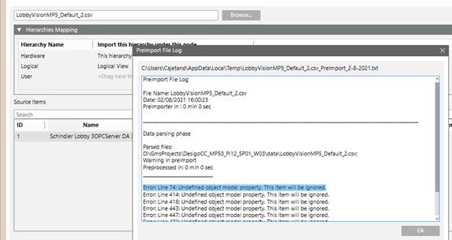

Importing Schindler Project Data Files
- The driver associated with the network is running.
- One or more valid database files are available locally or by browsing for the reachable network file.
- Select Project > Management station > Servers > Main Server > Drivers.
- In the Extended Operation tab, select the Transaction Mode property.
a. In the drop-down list, select Simple.
b. Click Set.
NOTE: The Simple option reduces import time, since not all import transactions are written to the project log database. Following engineering, the project must be reset to Logging. - Select Project > Subsystem Networks > [Network name] and click the Import tab.
- The Import page displays.
- Open the Hierarchies Mapping expander.
- In System Browser, select Logical View.
- Drag the top node Logical to the Hierarchies expander, to the Logical line in the column Import hierarchy under this node.
- Click Open on the top left margin to go to the data files.
- In the File type drop-down list, select the data type *.csv.
- Select the desired import files. [*].csv.
- Click Open.
- The preprocessor analyzes the selected file. Click Log Analysis for additional information in the event of a problem.
- In the Source column, select
 .
.
NOTE: If Delete unselected items from the views is selected, all automation stations and linked objects are deleted that are not in the selected import file. The main nodes must be manually deleted in Views for Logical View and User View. - Click Import.
- The import procedure starts with the first file in the Items to Import list. The State can be:
Completed,Failed,In progress (%),Partially completed[numbers of failed instances]. - A message is displayed at the end of the import process that summarizes the results in a detailed log. Click Import log.
Note: The import is not executed if the number of data points exceeds system limits. Check the Number of data points entered in project size. - Some error messages display in the log file after import (undefined object model properties). Ignore these error messages.

- Select Project > Management station > Servers > Main Server > Drivers.
- In the Extended Operation tab, select the Transaction Mode property.
a. In the drop-down list, select Logging.
b. Click Set.

Note:
You must reimport if you change the driver configuration after an import.